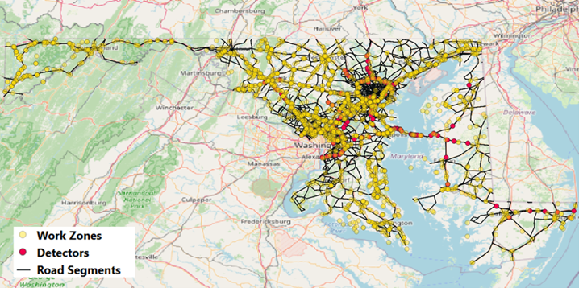
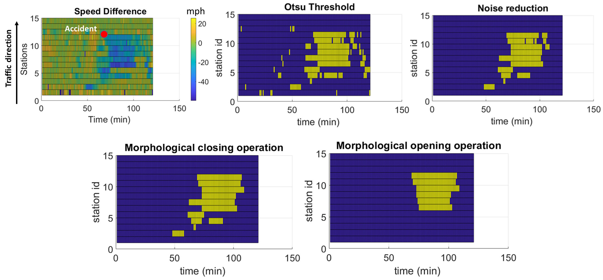
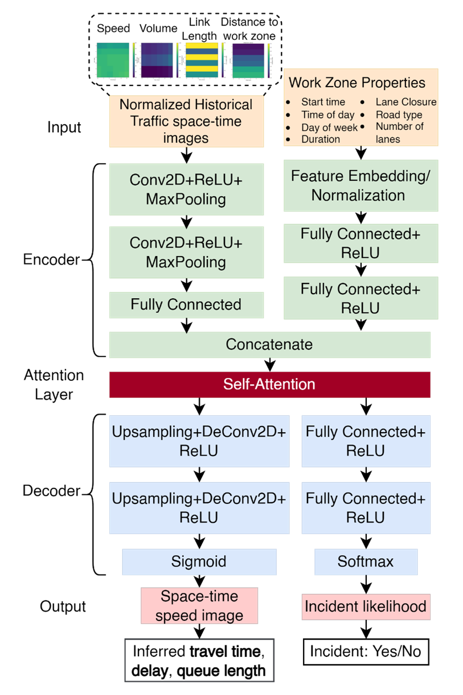

Cyber-Physical Mobility System: AI Network
Project Overview
This research combines traffic datasets and learning models to study the effects of work zones and incidents on road networks.
The work includes neural network models for work zone traffic impact prediction and data-driven estimates of the environmental impacts of traffic accidents.
Work Zone and Accident Analysis and Prediction

Work zone impact visualization showing traffic flow changes and affected areas

Real-time accident detection and impact analysis dashboard

AI-powered accident prediction and risk assessment interface

Neural network architecture for work zone impact prediction
Work zone and accident impact analysis with network visualization for traffic pattern prediction